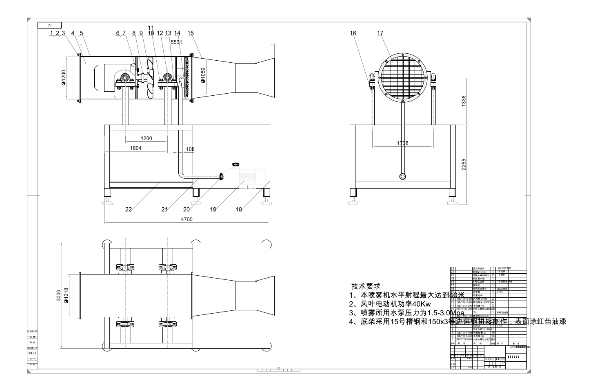
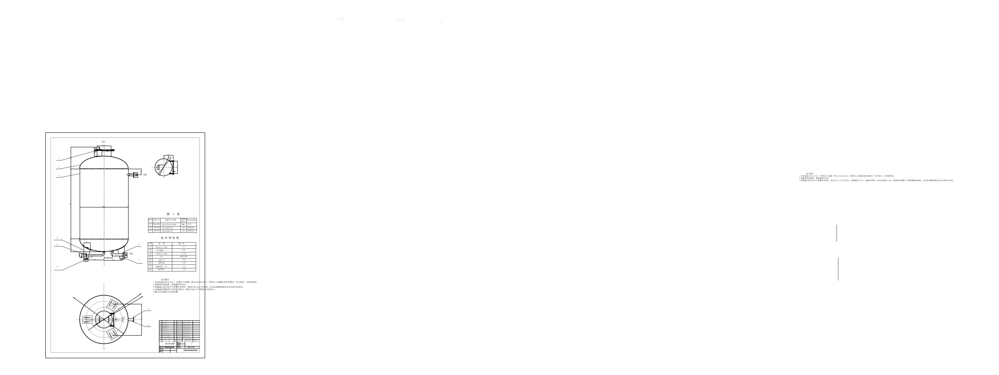
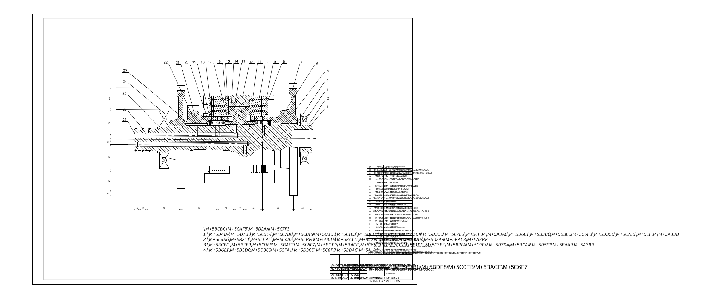
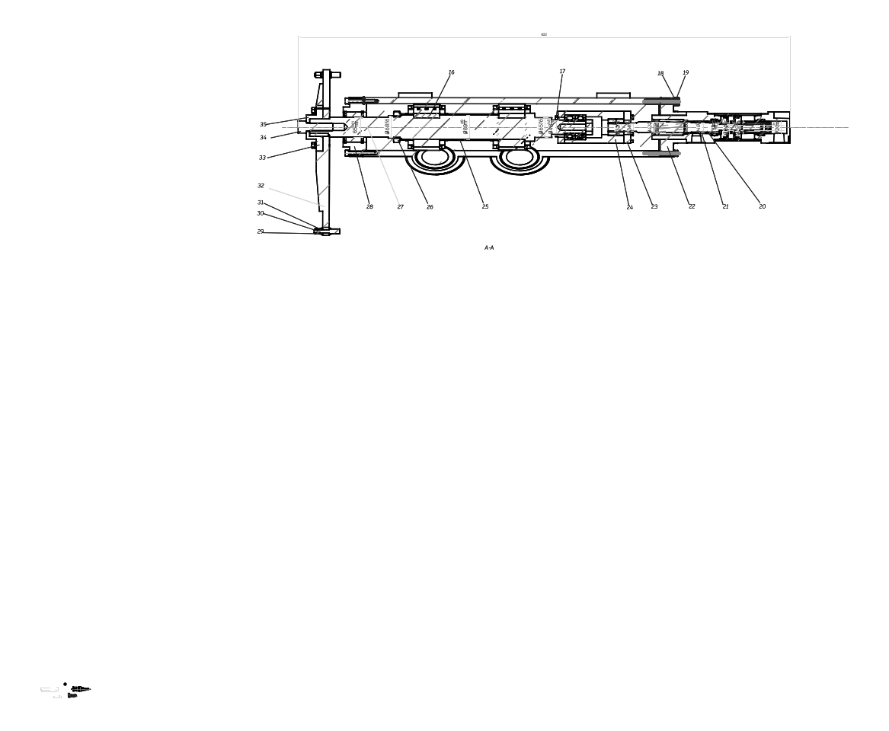
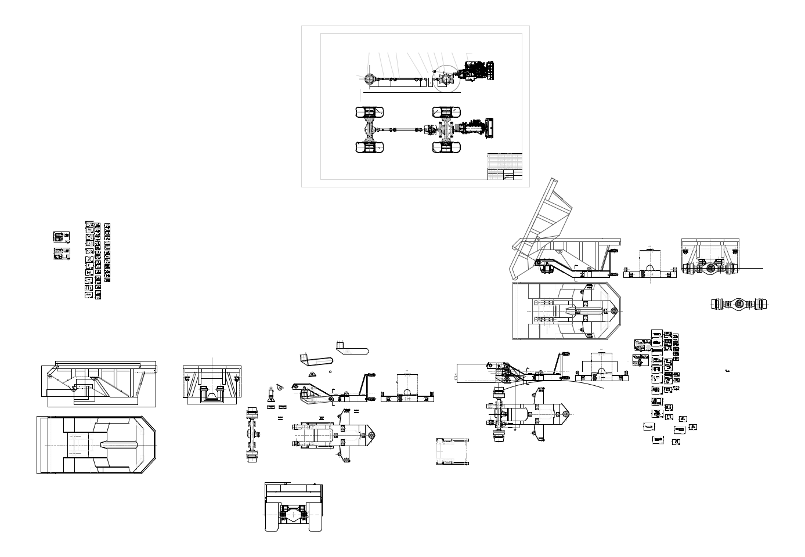
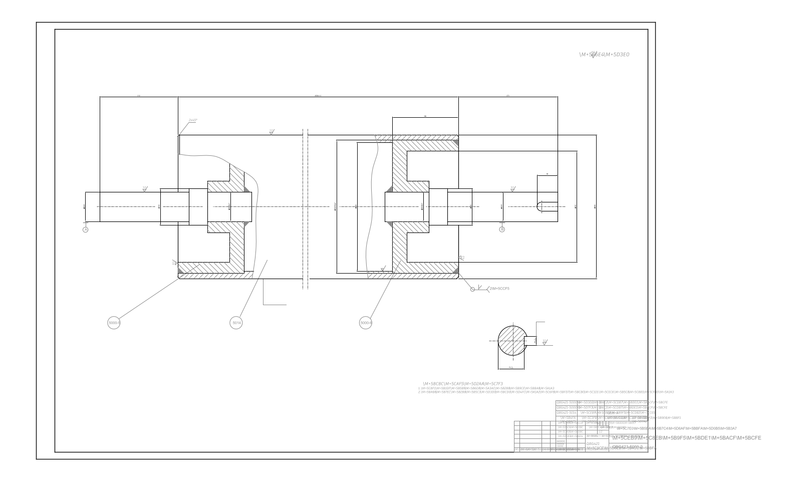
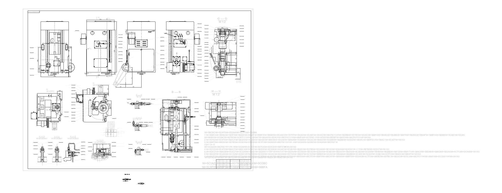
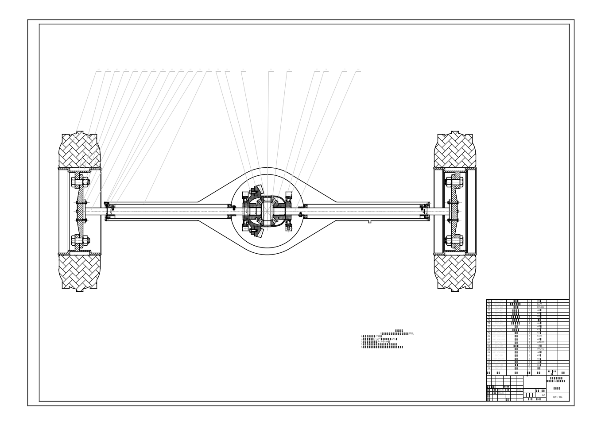
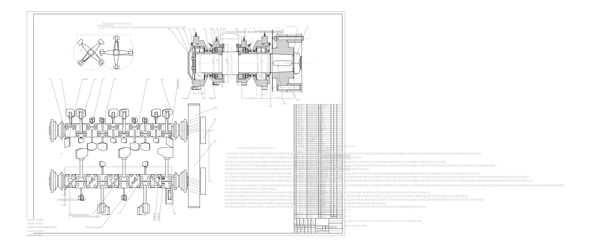

| # | File | Suggested Label | Graph2D Label | Confidence | Preview |
|---|---|---|---|---|---|
| 1 | 1200型风送式喷雾机.dxf | 型风送式喷雾机 | 机械平面图 | 0.9901 |  |
| 2 | 基质沥青计量罐.dxf | 基质沥青计量罐 | 装配图 | 0.8945 |  |
| 3 | 前进离合器A1.dxf | 前进离合器 | 装配图 | 0.8571 |  |
| 4 | 轴承外圈强化研磨上下料系统11-2.dxf | 轴承 | 装配图 | 0.4462 |  |
| 5 | 后机架更换桥6.20.dxf | 机架 | 装配图 | 0.3705 |  |
| 6 | 机械制图77.dxf | 机械制图 | 装配图 | 0.3241 |  |
| 7 | 31001-1.dxf | 差动机构 | 装配图 | 0.2779 |  |
| 8 | 4后桥装配.dxf | 后桥装配 | 装配图 | 0.2610 |  |
| 9 | 4后桥装配 - 副本.dxf | 后桥装配 | 装配图 | 0.2610 | |
| 10 | JDB00000.dxf | 轴类 | 装配图 | 0.2511 |  |